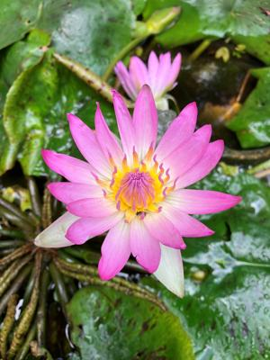

うるがいの話 ある日
最新: 名義変更やまを越える【うるがいの話 ある日】とは 一日だけのプログです
『うるがいの話』の最新一日だけのプログで、通信料が少なく経済的だ。カニの画像をクリックすると全ての日付が載る『うるがいの話』サイトを表示します
|
|
【うるがいの話】 うるがい(ｳﾙｶﾞｲ urugai)とは、『もずくがに』の名前でとても大きくなります。 |
|---|---|
|
|
【カミマヤーの話】 猫のことを方言でマヤーといいます。カミマヤー（kamimayaa）とは、神の猫のことです。 |
|
【たながぁの音楽】 たながぁ（ﾀﾅｶﾞｰ tanagaa）とは手長えびのことで、何種類かあり大きいのは車 エビぐらいになります。 |

|
【ぶながぁの話】 ぶながぁ(ﾌﾞﾅｶﾞｰ bunagaa)とは、赤い髪の毛、赤い身体、そして身長は１ｍ２０ｃｍ ぐらい、川の蟹を食べているの目撃された。場所は沖縄県国頭郡大宜味村のと ある村僕の隣近所に住んでいる爺さんから、聞いた話です。 |
|
|
【ギーマの話】 ギーマ(giima)とは、山原の里山に咲くスズランに似た、 花を付けます。実は食べられます、 気が付くと口の周りが紫になっています。 |
2023年04月25日 (火）名義変更やまを越える
15:23

果たして、司法書士の前でマンションの名義変更を了承するのだろうか？と心
配だったが、老人ホームで司法書士の人を交えてのお義母さん名義変更へ手続
きを終えた。ただし、多重人格のような素振り司法書士へは丁寧な対応だった
が、それ以外は、いつもの『私の人生は・・・、早く死にたい』と司法書士の
前でも叫んでいた。事前に女性の司法書士へは、お義母さんの話はしていたも
のの現実を目の当たりするとひいたと思うとヨメは言っていた。お義母さんが
まだ元気の頃、始終名義変更をしないの？と言っていたがコロナ禍などもあり
伸ばしてきた。出来ることは、早めにやる方がいいと改めて思う。ちなみ、な
ぜ名義変更を・・だが、放置しておくととんでもない事態を招く恐れが、背景
にあるからだ、お金がかかるが。

１５時１８分 ビットコインの総資産 ￥１０、６７０（↑２７）